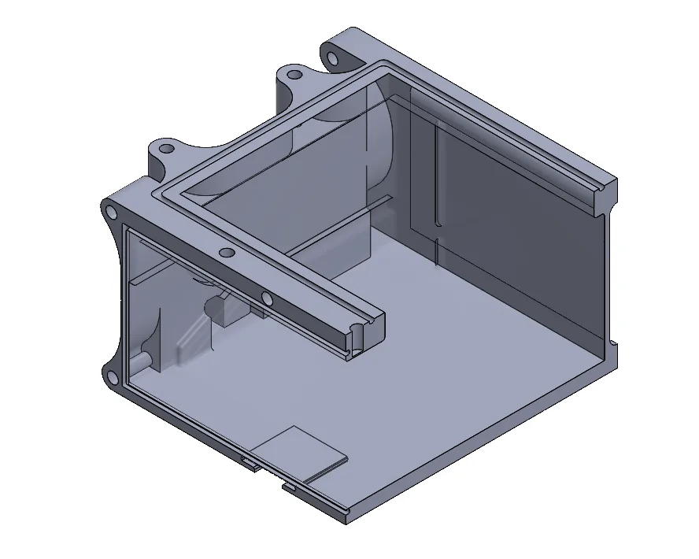
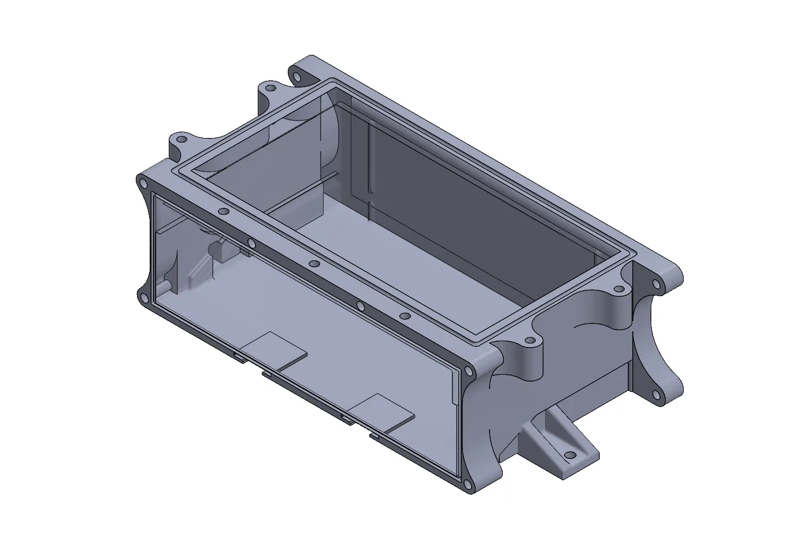

PDU Relay Enclosure
I designed the 3D-printed enclosure for the power distribution unit (PDU) on UW Formula Electric’s race car: the board that fuses and switches power to the car’s electronics. It had to fit around a board, connector and mounting points that were already fixed. Three prints got it to a flush fit, and the final version is 20% lighter than the first.
 (opens full-size image)
(opens full-size image)
The printed enclosure with the real PDU board and connector installed
−20% mass
Final version vs. the first print (about 300 g)
3 prints
To a flush, interference-free fit
PETG
FDM-printed, sliced in PrusaSlicer
The problem
The PDU board needs an enclosure to protect it on the car. Everything the enclosure touches was already decided: the board’s outline, where its main connector sits, and the mounting points on the car. My job was to design a box that fits all of them at once, without adding mass the car doesn’t need.
Constraints
- Fixed interfacesBoard outline, connector position and mounting points could not move; the enclosure had to fit them, not the other way round.
- Flush fitThe board seats fully and the connector lines up with its cut-out, with no interference.
- LightEvery gram counts on a race car, so no material beyond what the structure needs.
- PrintableFDM-printed in PETG, quick to reprint between fit checks.


(opens full-size image)Section view: internal geometry and mounting features
My role
- Mechanical member on the firmware subteam, Fall 2025.
- Owned the enclosure: requirements, parametric CAD in SolidWorks, slicing and printing, fit checks against the real board, and every revision.
Approach: model it, print it, fit it, fix it
-
Drive the CAD from the fixed interfaces
Built the enclosure as a parametric SolidWorks model, with the board outline, connector cut-out and mounting holes as the driving dimensions. A fit problem then means changing one dimension, not remodelling the part.
-
Find the stack-up the CAD didn’t show
On the first prints, the board would not seat. Small tolerances in the board, the connector and the printed walls added up past the clearances I had modelled: a tolerance stack-up. I adjusted those clearances in the parametric model until the board seated.
-
Check every change against the real hardware
Each print was fit-tested with the actual PDU board and connector, not just measured. The third print seated flush with no interference.
-
Take out what the structure doesn’t need
Thinned the walls, removed non-structural material and filleted the corners, while keeping material where the mounting tabs carry load. The final version is 20% lighter than the first print.


(opens full-size image)Final CAD: mounting tabs at the fixed chassis points, material removed elsewhere
Results: first print vs. final
| Result | First print | Final (third) print |
|---|---|---|
| Fit | Board would not seat (tolerance stack-up) | Board and connector seat flush, no interference |
| Mass | About 300 g | −20% |
What I took from it
- Fits fail at the stack-up, not the nominal. Each dimension was fine on its own; the sum of small tolerances stopped the board seating. Clearances have to come from the stack-up, not the nominal sizes.
- Parametric models make iteration cheap. Driving the model from the interfaces meant each fix was one dimension change and a reprint.
- Also on the team: I hand-built composite parts, moulding the undertray and laying up carbon fibre plating, and machined components on the team’s shop equipment.